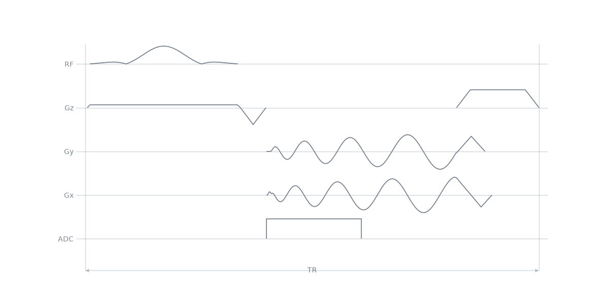
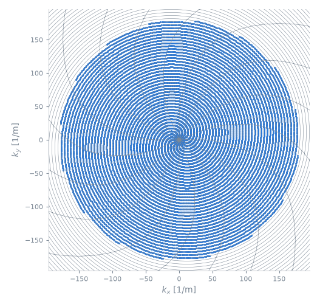

Note
Go to the end to download the full example code.
A twisting radial readout module#
The scope of this notebook is to write a non-Cartesian readout module of one’s own: to state a trajectory as a k-space path, have it solved into a waveform under the gradient limits, and publish the result as a module.
A radial spoke samples the centre of k-space far more densely than the periphery: at radius \(k\), adjacent spokes of an \(N\)-interleaf set are \(2\pi k / N\) apart, which exceeds the Nyquist spacing \(1/\mathrm{FOV}\) beyond a transition radius
A twisting radial line [JNM92] departs from the spoke beyond that radius and accumulates azimuth with radius, so that the perpendicular distance between neighbouring interleaves stays at the Nyquist spacing.
Outline:
The path. The trajectory, written as a polyline in k-space.
The interleaf. The waveform the solver returns, and the limits it respects.
The readout module. The path and the solver behind a module interface.
Readout duration against a spiral. The two trajectories at the same coverage.
One repetition. The blocks the module publishes.
Scan loop. One arm, turned per shot by a rotation extension.
What a module is, and what it must publish, is described in Sequence modules.
The path#
The arm is a polyline in k-space: its samples set the geometry and nothing
else. Arbitrary hands it to the time-optimal
solver, which assigns the timing under the amplitude and slew limits and
builds the gradient events, the acquisition window and the rewinder back to
k = 0.
import numpy as np
from scipy.integrate import cumulative_trapezoid
import pypulseqpp as pp
import pypulseqpp.sequences as design
def twirl_path(fov: float, matrix: int, interleaves: int, samples: int = 2048):
"""Return the ``(samples, 2)`` k-space path of one twisting radial arm, in 1/m."""
radius = np.linspace(0.0, matrix / (2 * fov), samples)
transition = interleaves / (2 * np.pi * fov)
twisting = radius > transition
slope = np.zeros_like(radius)
slope[twisting] = (
np.sqrt((2 * np.pi * fov * radius[twisting] / interleaves) ** 2 - 1.0)
/ radius[twisting]
)
angle = cumulative_trapezoid(slope, radius, initial=0.0)
return np.column_stack([radius * np.cos(angle), radius * np.sin(angle)])
The interleaf#
Arbitrary stretches the readout to hold the samples it is given, so the
sample count has to match the arm rather than the matrix. The time-optimal
duration is not known until the arm is solved, so it is solved once at two
samples to measure that duration and once more with the number of samples the
duration holds at the requested rate.
def twirl_interleaf(
system: pp.Opts,
fov: float,
matrix: int,
interleaves: int,
*,
readout_bandwidth_hz: float = 250e3,
):
"""Solve one twisting radial arm and fill it with samples."""
path = twirl_path(fov, matrix, interleaves)
probe = design.Arbitrary(
system, path, matrix=2, bandwidth_hz_px=readout_bandwidth_hz
)
samples = int(probe.read_duration * readout_bandwidth_hz)
return design.Arbitrary(
system, path, matrix=samples, bandwidth_hz_px=readout_bandwidth_hz
)
The readout module#
NonCartesianReadout plays any two-channel
interleaf: it places the prewinder, the acquisition and the rewinder against
the pulse it is given, solves the echo time and the repetition time, and adds
the spoiler. A family that designs its own interleaf subclasses it, builds
the trajectory in init_module and forwards the rest, which is how the
shipped spiral and rosette readouts are written.
class TwirlReadout2D(design.NonCartesianReadout):
"""One twisting radial arm in a plane.
Parameters
----------
fov : float
Isotropic in-plane field of view (m).
matrix : int
In-plane matrix size.
interleaves : int
Number of arms used to set the pitch and transition
radius. The loop may acquire any number of rotated copies.
readout_bandwidth_hz : float, optional
Requested ADC sampling rate (Hz).
"""
def init_module(
self,
system: pp.Opts,
rf,
gz=None,
gz_reph=None,
*,
fov: float,
matrix: int,
interleaves: int,
readout_bandwidth_hz: float = 250e3,
**kwargs,
) -> None:
trajectory = twirl_interleaf(
system,
fov,
matrix,
interleaves,
readout_bandwidth_hz=readout_bandwidth_hz,
)
super().init_module(system, rf, gz, gz_reph, trajectory=trajectory, **kwargs)
Readout duration against a spiral#
A constant-density spiral designed for the same interleaf count samples the same field of view at the same resolution, and spends longer doing it: the twisting arm crosses the centre of k-space radially, where the spiral has to wind through it at the Nyquist pitch.
system = pp.Opts(
max_grad=40.0,
grad_unit="mT/m",
max_slew=150.0,
slew_unit="T/m/s",
rf_dead_time=100e-6,
rf_ringdown_time=30e-6,
adc_dead_time=10e-6,
)
FOV = 220e-3
MATRIX = 128
INTERLEAVES = 16
arm = twirl_interleaf(system, FOV, MATRIX, INTERLEAVES)
spiral = design.Spiral(system, FOV, MATRIX, design_interleaves=INTERLEAVES)
for name, interleaf in (("twisting radial", arm), ("spiral", spiral)):
print(
f"{name:16} {interleaf.n_samples:5d} samples, readout "
f"{interleaf.read_duration * 1e3:5.2f} ms, interleaf "
f"{interleaf.duration * 1e3:5.2f} ms"
)
print(
f"transition radius {INTERLEAVES / (2 * np.pi * FOV):.1f} of "
f"{MATRIX / (2 * FOV):.1f} 1/m"
)
twisting radial 968 samples, readout 3.88 ms, interleaf 4.60 ms
spiral 1100 samples, readout 4.42 ms, interleaf 5.04 ms
transition radius 11.6 of 290.9 1/m
One repetition#
excitation = design.SpatialSelectiveExcitation(
system, flip_angle_deg=15.0, thickness_m=5e-3, duration_s=3e-3
)
readout = TwirlReadout2D(
system,
excitation.rf,
excitation.gz,
excitation.gz_reph,
fov=FOV,
matrix=MATRIX,
interleaves=INTERLEAVES,
te=None,
tr=None,
spoiling_cycles=4.0,
)
print("events:", ", ".join(sorted(vars(readout.events))))
print(
f"TE {readout.echo_time * 1e3:.3f} ms over a {readout.duration * 1e3:.3f} ms "
"repetition"
)
seq = pp.Sequence(system=system)
for block in readout.blocks:
seq.add_block(*block)
seq.paper_plot(tr=1)

/home/runner/work/pypulseqpp/pypulseqpp/docs/build/site/pypulseqpp/_events.py:269: UserWarning: Specified RF delay 0.00 us is less than the dead time 100 us. Delay was increased to the dead time.
made = factory(*args, **kwargs)
events: adc, gx, gx_rew, gy, gy_rew, gz, gz_reph, gz_spoil, rf, wait_pre, wait_rew
TE 2.080 ms over a 9.240 ms repetition
namespace(diagram=<mrsd.diagram.Diagram object at 0x7fa9f6b10410>, tr=1, underlays=[])
Scan loop#
One solved arm is turned per shot by a rotation extension, which the loop adds to every block that drives an in-plane gradient.
angles = 2 * np.pi * np.arange(INTERLEAVES) / INTERLEAVES
rotations = [pp.make_rotation(float(angle)) for angle in angles]
scan = pp.Sequence(system=system)
for shot, rotation in enumerate(rotations):
scan.add_block(excitation.rf, excitation.gz, pp.make_label("LIN", "SET", shot))
for block in readout.blocks[1:]:
events = list(block)
if any(getattr(event, "channel", None) in ("x", "y") for event in events):
events.append(rotation)
scan.add_block(*events)
print(
f"{scan.num_blocks} blocks, {scan.duration()[0] * 1e3:.1f} ms, "
f"timing {scan.check_timing()[0]}"
)
64 blocks, 147.8 ms, timing True
The arms the loop acquired.
pp.plot.plot_kspace(scan, plane="xy")

<Figure size 550x500 with 1 Axes>
References#
Jackson JI, Nishimura DG, Macovski A. Twisting radial lines with application to robust magnetic resonance imaging of irregular flow. Magnetic Resonance in Medicine. 1992;28(2):251-263. https://doi.org/10.1002/mrm.1910280209
Total running time of the script: (0 minutes 0.143 seconds)